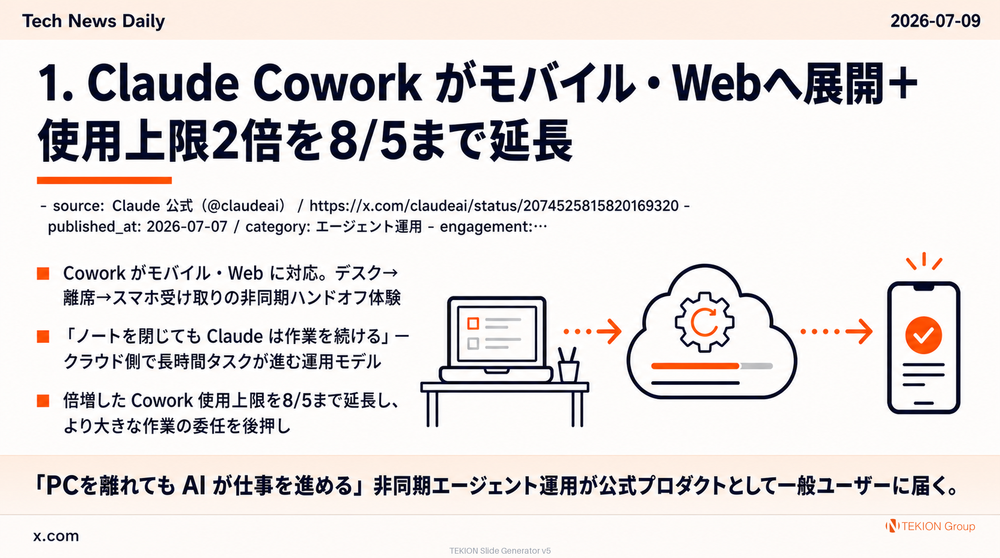

エージェント運用 · Claude 公式（@claudeai）
Claude Cowork がモバイル・Webへ展開＋使用上限2倍を8/5まで延長

Anthropic が Claude Cowork をモバイル・Web に展開すると発表した。デスクでタスクを渡し、その場を離れてもクラウド側で作業が継続、完成した成果物をスマホから受け取れる。あわせて、より大きな作業を委任できるよう「倍増した使用上限」を8/5まで延長すると告知した。
- Cowork がモバイル・Web に対応。デスク→離席→スマホ受け取りの非同期ハンドオフ体験
- 「ノートを閉じても Claude は作業を続ける」— クラウド側で長時間タスクが進む運用モデル
- 倍増した Cowork 使用上限を8/5まで延長し、より大きな作業の委任を後押し
- ベータを今後数週間で段階的にロールアウト